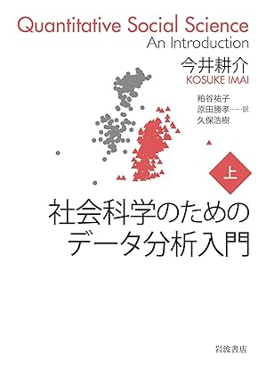
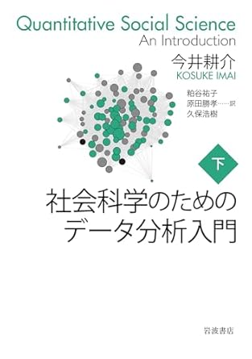
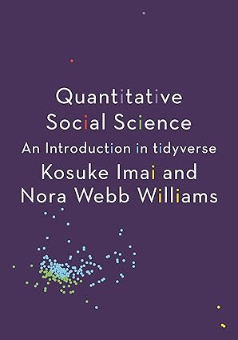

[1] 4『新・社会科学のためのデータ分析入門 導入編』第1章
pp.1-7を参照すること
JDCat分析ツール（クラウド版のR/RStudio）を使用
「コードをどこに書くか」によって使い方が変わる
本書学習用のプロジェクトを作成
da4ss」か「DA4SS」で良いかもzemi」とか「seminar」でも良いsong_sensei_maji_kakkoiiでも良い以下の作業は1回だけで十分
Dataとかdataなど）便利なショートカット
| 機能 | Windows | macOS |
|---|---|---|
.qmdファイルのレンダー |
Ctrl+Alt+I | Cmd+Shift+K |
| Chunkを追加 | Ctrl+Alt+I | Cmd+Shift+I |
| 現在編集中のファイルを保存 | Ctrl+S | Cmd+S |
| コピー | Ctrl+C | Cmd+C |
| カット | Ctrl+X | Cmd+X |
| 貼り付け | Ctrl+V | Cmd+V |
| 全体選択 | Ctrl+A | Cmd+A |
| 部分選択 | Shift+矢印 | Shift+矢印 |
| 検索&置換 | Ctrl+F | Cmd+F |
分析に使用するパッケージはソースコードファイル（.Rファイル）の最上段に読み込みのコードを記入する
{tidyverse}は本講義の必須パッケージだから、とりあえずlibrary(tidyverse)は書いておくinstall.packages("パッケージ名")でインストールする
Consoleペインで直接入力するか、Sourceペインに入力し、実行する。
代入演算子1（<-）を使ってオブジェクトを作成
ls()で確認可能オブジェクト名かprint(オブジェクト名)c()関数で作成し、要素（elements）はカンマ（,）で区切る"か'で囲む（"、'で囲まれていない文字列はオブジェクト名扱い）
NA、TRUE、FALSE、Inf、NULL、NaNなど#以降の文字はコメント扱いとなり、結果には影響を与えない
"で囲まれている）の#はコメントではなく、通常の文字列関数（function）：入力に対し、決められた手続きで計算を行い、出力を返すもの
関数名()）,）で区切る引数名 = 引数第1引数の仮引数は省略し、実引数のみ書く（何が第1引数かはコンソールで?関数名で確認）
仮引数 = 実引数sd()は2つの引数があり、引数名はそれぞれx、na.rmmean()の場合、na.rmの既定値がFALSEであるため、na.rm = FALSEを指定するなら、省略可能
?関数名で確認mean()はx、trim、na.rmの計3つの入力を受け付けるが、trimとna.rmには既定値がある（それぞれ0とFALSE）read_csv()関数で.csv形式ファイルを読み込む。
read_csv()は{readr}パッケージが提供する関数（{readr}は{tidyverse}の一部）"で囲む）<-）を使用し、作業環境に格納する。
ls()関数で作業環境内のオブジェクト一覧が確認できる。.csv形式ファイルでもread.csv()で読み込んだらその表のデータ構造はデータフレーム（data.frame）であり、read_csv()で読み込んだらティブル（tibble）となる。
方法1：print(オブジェクト名)（n引数で出力行数が指定可能; 既定値は10）
# A tibble: 1,274 × 4
classtype reading math graduated
<chr> <dbl> <dbl> <dbl>
1 small 578 610 1
2 regular 612 612 1
3 regular 583 606 1
4 small 661 648 1
5 small 614 636 1
6 regular 610 603 0
7 small 595 610 1
8 small 665 631 1
9 regular 616 636 1
10 regular 624 626 1
# ℹ 1,264 more rows方法2：view(オブジェクト名)
starは4つの変数で構成されている）\[ X = \{10, 5, 8\} \]
| 変数名 | 説明 |
|---|---|
classtype |
生徒が通った学級の規模（"small"は小規模、"regular"は標準規模） |
reading |
生徒の小学3年次の読解力テストの点数（単位：点） |
math |
生徒の小学3年次の数学テストの点数（単位：点） |
graduated |
高校を卒業したかどうか（1 = 卒業した / 0 = 卒業しなかった） |
classtype列graduated列reading、math列データセット内の観察の数であり、データフレームの行数と一致する
starの観察数は1,274であり、\(n\)=1,274と表記する
dim()関数、またはnrow()関数で確認データフレーム名$列名 [1] 578 612 583 661 614 610 595 665 616 624 593 599 693 545 565 654 686 570
[19] 529 582 608 572 562 641 644 565 650 552 636 567 554 595 620 639 633 614
[37] 606 578 536 629 675 604 577 713 693 595 593 599 616 620 592 702 636 654
[55] 675 665 573 641 533 616 670 654 686 693 614 606 614 616 616 661 626 713
[73] 636 675 629 680 629 631 650 654 618 604 657 675 665 657 569 650 600 675
[91] 665 665 602 618 608 647 606 592 639 641 657 633 650 713 614 588 713 647
[109] 657 585 654 552 661 650 686 702 713 549 597 590 647 728 629 680 657 665
[127] 665 608 583 629 670 665 665 629 614 608 675 644 650 654 654 595 647 543
[145] 713 624 670 680 572 641 654 582 597 633 624 728 675 578 639 680 595 670
[163] 569 602 661 650 661 650 633 590 661 686 580 620 670 614 580 606 614 622
[181] 639 633 583 657 728 657 636 606 680 650 590 549 600 580 654 702 670 608
[199] 680 636 641 608 580 686 622 633 610 593 670 614 599 633 686 702 588 622
[217] 693 631 680 657 629 599 665 595 633 661 622 614 680 626 602 557 650 608
[235] 631 629 657 602 595 612 702 644 608 636 675 633 587 624 597 650 595 670
[253] 686 670 595 572 626 631 675 675 636 600 657 588 641 629 612 661 654 602
[271] 595 620 639 644 612 665 728 629 728 554 650 629 693 654 567 602 657 650
[289] 557 647 629 569 650 624 641 620 578 644 606 661 602 614 602 626 587 604
[307] 629 693 600 629 622 631 593 693 633 647 629 631 629 670 570 616 657 593
[325] 657 713 602 728 631 633 644 582 661 606 582 608 620 675 597 622 618 644
[343] 599 620 629 578 702 686 639 654 626 557 702 670 590 529 587 560 650 604
[361] 585 629 647 626 636 686 657 588 665 670 686 661 675 657 587 588 654 686
[379] 654 654 608 583 702 626 608 665 593 608 644 639 585 573 657 641 631 631
[397] 554 650 582 636 657 647 686 753 650 633 582 595 629 549 614 595 614 600
[415] 602 639 650 633 597 657 608 604 654 622 647 602 686 644 580 626 587 654
[433] 647 661 647 680 602 570 693 670 650 610 612 620 650 665 728 631 661 650
[451] 633 654 665 661 680 631 597 562 670 564 614 590 573 593 573 650 622 608
[469] 580 661 557 654 620 633 629 608 622 636 633 654 641 654 545 626 680 661
[487] 608 675 633 675 606 629 610 657 604 631 577 644 567 636 618 624 597 600
[505] 624 693 606 675 647 616 578 616 604 595 577 583 693 593 654 631 641 600
[523] 578 618 753 636 555 614 577 606 585 588 636 622 582 650 641 618 606 665
[541] 592 559 610 624 585 670 626 610 631 583 670 614 614 626 618 680 616 661
[559] 693 559 618 588 593 654 590 647 675 693 624 670 620 608 650 670 573 693
[577] 602 665 629 680 612 606 665 573 612 600 622 583 620 636 675 570 629 641
[595] 657 641 590 616 641 641 616 665 675 620 650 592 577 702 590 616 631 616
[613] 657 633 728 641 592 585 622 606 631 636 608 665 592 585 618 587 633 564
[631] 647 657 636 665 702 713 631 639 641 633 616 590 593 644 612 590 629 608
[649] 670 620 624 665 582 633 657 654 675 616 641 614 641 665 641 702 624 624
[667] 686 665 665 633 641 680 629 639 629 610 583 636 670 624 622 650 650 629
[685] 670 610 624 702 670 641 622 675 693 693 588 602 654 593 657 554 564 639
[703] 573 654 608 650 713 620 657 636 650 583 629 639 600 629 665 588 612 636
[721] 614 654 629 616 633 661 552 582 639 600 670 644 675 622 616 650 592 641
[739] 702 590 675 612 622 629 587 578 686 587 597 592 582 644 599 661 639 713
[757] 616 575 612 641 620 624 602 595 626 661 608 610 560 582 680 665 636 675
[775] 614 654 665 597 647 661 616 595 631 595 592 592 575 686 593 644 582 639
[793] 650 620 622 661 606 675 604 629 675 622 686 624 564 680 612 636 636 624
[811] 624 686 670 612 626 616 590 670 608 641 657 631 572 644 610 610 597 650
[829] 559 595 610 618 629 665 529 624 641 622 599 657 593 629 665 644 693 636
[847] 647 644 641 657 693 633 618 693 670 686 633 650 599 622 590 641 616 535
[865] 622 618 713 647 644 693 614 639 661 654 654 612 612 641 713 622 654 665
[883] 670 693 631 606 624 661 647 612 647 661 592 636 647 661 552 680 593 693
[901] 610 633 686 647 647 587 587 559 562 616 618 582 641 624 626 604 657 622
[919] 592 641 606 629 647 631 567 686 670 641 661 604 661 629 633 728 636 604
[937] 602 629 661 600 604 616 641 657 661 616 665 631 629 647 650 620 624 614
[955] 595 629 650 647 636 624 618 587 639 680 644 641 629 650 633 641 622 631
[973] 702 693 595 626 631 665 587 590 661 644 686 606 590 538 629 588 644 636
[991] 686 680 606 639 620 657 608 647 559 616 693 702 639 527 622 644 572 636
[1009] 614 647 629 661 602 629 585 564 587 702 665 606 592 602 650 616 636 602
[1027] 641 629 654 583 604 587 585 622 606 644 633 559 616 604 650 629 600 602
[1045] 573 593 675 624 675 644 585 633 641 565 557 585 608 675 641 636 641 641
[1063] 610 578 654 582 650 593 654 593 616 661 654 599 614 599 610 593 647 602
[1081] 657 604 626 639 578 644 588 665 680 610 606 600 602 588 639 647 636 654
[1099] 647 680 604 585 612 622 599 599 595 606 644 616 647 639 597 654 639 650
[1117] 650 636 670 604 636 577 665 680 620 570 578 633 614 686 639 650 639 631
[1135] 592 680 675 616 633 624 626 650 675 612 644 595 588 654 661 593 620 629
[1153] 570 577 620 575 600 680 600 588 593 610 626 633 597 614 578 595 612 644
[1171] 647 650 578 654 606 604 602 582 606 633 650 606 629 604 670 588 644 624
[1189] 633 650 753 633 552 647 610 608 654 633 565 693 618 606 702 602 622 606
[1207] 622 608 639 626 647 636 614 713 585 578 626 650 590 569 661 661 670 614
[1225] 610 629 602 631 675 557 680 631 597 670 650 612 670 686 592 641 631 602
[1243] 593 624 633 686 595 713 602 639 629 633 647 587 616 580 608 595 592 542
[1261] 647 665 604 636 657 590 641 641 657 650 636 629 641 575mean(平均値を計算する数値列)
mean(x = 平均値を計算する数値列)でも良いが、第1引数の仮引数は省略することが多いため、x =は書かなくても良い| 回 | 日 | 内容 |
|---|---|---|
| 第08回 | 2025/06/03 | 第2章 |
| 第09回 | 2025/06/10 | 第3章 |
| 第10回 | 2025/06/17 | 第4章 |
| 第11回 | 2025/06/24 | 第5章 |
| 第12回 | 2025/07/01 | 第6章 |
| 第13回 | 2025/07/08 | 第7章 |
| 休講 | ||
| 第15回 | 2025/07/22 | 第8章 |
次のステップとして以下の本がおすすめ



第1章「イントロダクション」